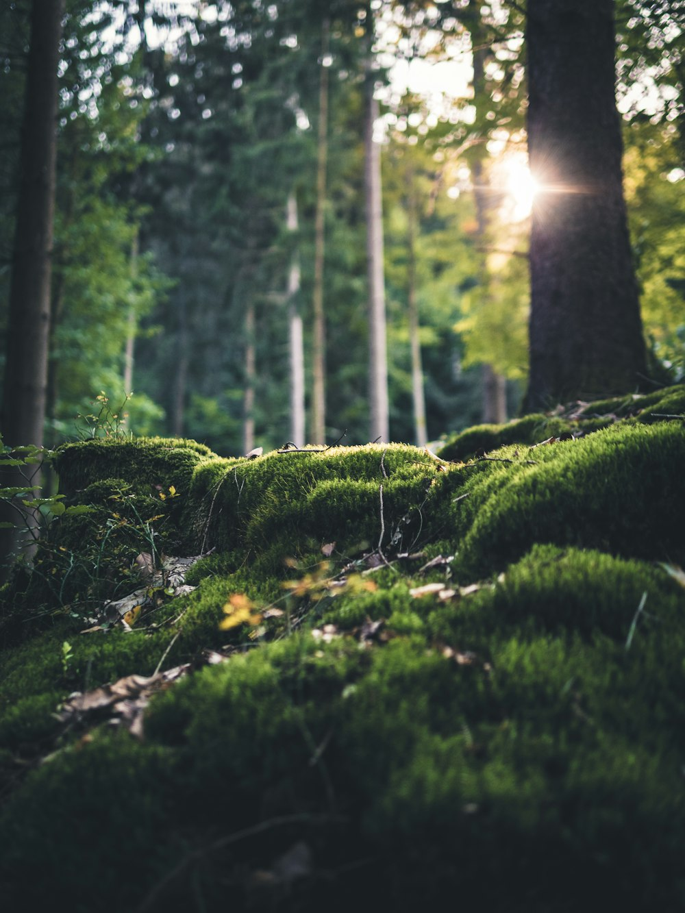

Banu Lesmana Bagaskara, S.M.
Anggota DPRD Kota Bogor terpilih periode 2024–2029 dari Dapil 4 Kecamatan Tanah Sareal (PDI Perjuangan No. Urut 5). Berlatar belakang profesional manajemen bisnis di sektor riil dengan tekad memperjuangkan transparansi anggaran publik dan pelayanan dasar rakyat tanpa sekat.

Visi & Tiga Misi Pokok
“Kota Bogor yang Maju dan Nyaman untuk Semua”
Kemajuan Kota Bogor tidak boleh meninggalkan satu pun kelompok masyarakat. Pembangunan fisik harus berjalan selaras dengan ketenangan hidup, kemudahan akses kesehatan darurat, perlindungan hak belajar anak, serta kepastian berusaha bagi pedagang kecil di tingkat rukun warga.
Advokasi & Analisis Masukan Rakyat
Menjaga rencana pembangunan agar senantiasa berpihak pada rakyat melalui analisis dampak mendalam serta penyerapan masukan warga secara berkala dan terverifikasi.
Peningkatan Taraf Pendidikan Warga
Meningkatkan taraf pendidikan warga Kota Bogor dan memastikan penurunan angka putus sekolah melalui advokasi alokasi beasiswa daerah yang tepat sasaran.
Kemandirian Ekonomi & Keilmuan
Mendorong masyarakat terjun di bidang keilmuan dan penelitian terapan guna mengurangi angka pengangguran serta meningkatkan daya beli dan taraf hidup warga.
Rekam Jejak Pengalaman & Pendidikan
Rekam Jejak Pengalaman
Riwayat Pendidikan
12 Isu Penting
Aparat Daerah (DPRD, Pemda)
Pengawasan kinerja birokrasi pemda, percepatan digitalisasi pelayanan publik (e-gov), serta transparansi alokasi belanja APBD Kota Bogor agar berdampak nyata bagi warga.
Korupsi, KPK
Mendukung pencegahan kebocoran anggaran publik, menolak praktik pungutan liar dalam perizinan UMKM, serta memastikan proses pengadaan barang dan jasa berjalan bersih.
Polisi & Peradilan
Mendorong penegakan hukum yang adil dan humanis tanpa diskriminasi, serta penyediaan fasilitas bantuan hukum advokasi bagi warga tidak mampu di Kota Bogor.
Berita Hoax yang Meresahkan
Penguatan literasi digital warga dan kanal verifikasi informasi resmi lingkungan untuk menangkal disinformasi provokatif demi ketenangan sosial di tingkat RT/RW.
Rawat Orang Tua, Disabilitas, Yatim, Orang Miskin
Penyediaan jaminan perlindungan sosial terpadu, pendampingan kesehatan lansia melalui ambulans siaga 24 jam, pemenuhan hak anak yatim, dan aksesibilitas ramah disabilitas.
Kebebasan & Kerukunan Beragama
Merawat harmoni antarumat beragama, menjamin hak beribadah secara aman bagi semua kalangan, dan mempererat dialog lintas keyakinan di wilayah Tanah Sareal.
Pancasila, Terorisme, Keamanan
Pengamalan nilai-nilai ideologis Pancasila dalam keseharian, pencegahan radikalisme, serta penguatan pos ronda dan ketertiban lingkungan permukiman warga.
Isu Moralitas Masyarakat
Aksi konkret penanganan dan pencegahan tawuran pelajar melalui wadah riset kreatif, pelatihan vokasi pemuda, dan kompetisi olahraga antar-kelurahan yang terarah.
Kebersihan Lingkungan
Revitalisasi saluran air gang untuk mengatasi genangan banjir saat hujan deras, peremajaan armada pengangkut sampah, dan dukungan penguatan bank sampah RT/RW.
Polusi Udara, Sampah, dlsb.
Pemantauan kualitas udara di koridor padat Tanah Sareal, pembatasan timbulan sampah plastik sekali pakai, serta tata kelola pembuangan limbah terintegrasi.
Ruang Terbuka Hijau, Taman
Memperjuangkan penambahan taman tematik kelurahan, ruang bermain ramah anak yang aman, serta penghijauan peneduh di ruas-ruas jalan utama Kecamatan Tanah Sareal.
Perubahan Iklim & SDA
Konservasi daerah tangkapan dan resapan air di bantaran sungai, mitigasi risiko bencana tanah longsor saat musim hujan, serta pelestarian sumber daya alam lokal.
Enam Fokus Program
| Rumah Aspirasi Rakyat
Rumah singgah terbuka di Kedung Badak buat warga yang mau ngobrol santai, sampaikan unek-unek lingkungan, atau butuh bantuan advokasi dewan.
| Ambulance Siaga 24 Jam
Layanan ambulance gratis bareng relawan yang siap antar jemput warga sakit atau darurat medis kapan saja tanpa dipungut biaya.
| Transparansi APBD & E-Gov
Mendorong pengawasan publik terbuka dan digitalisasi administrasi Kota Bogor agar alokasi anggaran tepat sasaran dan terbebas dari kebocoran.
| Wajib Belajar Anak Kota Bogor
Mencegah anak putus sekolah melalui advokasi alokasi beasiswa daerah serta perlindungan hak anak untuk menuntaskan pendidikan 12 tahun.
| Kota Bogor Tanpa Tawuran
Membina generasi muda melalui wadah riset kreatif, pelatihan keahlian kerja, dan kompetisi olahraga lingkungan yang positif dan bebas kekerasan.
| Digitalisasi UMKM RT/RW
Pendampingan izin NIB resmi, sertifikasi halal gratis, pelatihan pemasaran produk digital, serta akses kemitraan permodalan usaha keluarga.

“Kursi di parlemen bukan privilese kekuasaan, melainkan mandat pengabdian rakyat yang harus dipertanggungjawabkan secara terbuka setiap waktu.”
Ada Masukan atau Keluhan di Lingkunganmu?
Sampaikan usulan perbaikan jalan, lampu mati, saluran air, atau keluhan lainnya langsung ke Kotak Aspirasi Warga.